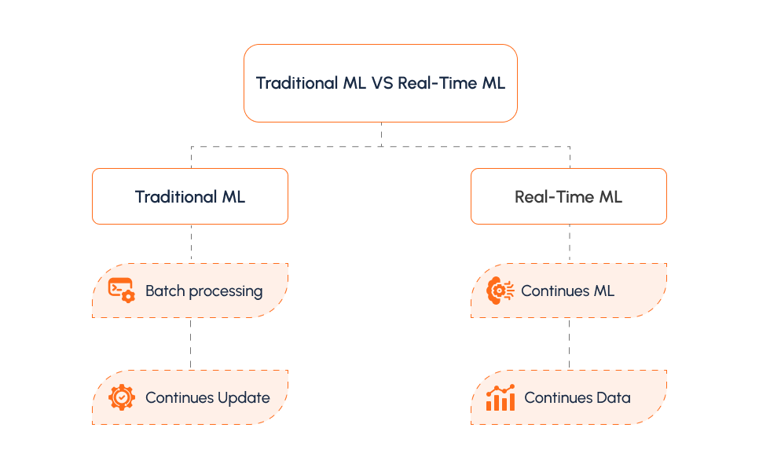

If you’re reading this blog then I would assume that you already realized that AI is changing the way businesses interact with their customers and provide services and you too want to leverage this technology to enhance your business operations. However, navigating the waters of custom AI model development can be tricky and this is why I’m writing this blog post for you so that you can learn more about this technology and how you can use it to transform your business. We will also go through the ins and outs of AI technology so that you can understand your own needs better. Because AI is a whole ocean of possibilities and the solutions out there that you can use are also very diverse. You may not need custom AI development because you are trying to tackle problems that have already been solved by third party software providers. Or maybe custom AI model development is the perfect solution for you because you are in an industry that puts a lot of emphasis on security and transparency.
Whatever might be the path you’re coming from, we are going to dive deep into various concepts and by the end of our blog you will be more than ready to tackle this technology like a champion and transform your business for years to come. Let’s get started.
What is Custom AI Model Development?
Let’s start off by learning about what an AI model is because that’s what powers everything and you need to understand these concepts to approach custom AI model development properly. In a nutshell an AI model is a computational system that is capable of learning from data and performing tasks like classification, prediction and decision making. The way you make your AI models effective is by training them on large and relevant datasets which the AI model can then use to recognize patterns, make decisions and generate responses based on input given by users. If you think about it an AI model is just like the human brain computing data and turning them into information we understand. As humans to use our brain we need experiences and information which is what training is all about in custom AI model development.
We categorize AI models into a few types; supervised, unsupervised, reinforcement learning and deep learning models. The concept here is that AI is not a singular system that can handle anything you throw at it. Although researchers from all around the world are trying to achieve that and create what’s known as Artificial General Intelligence or AGI. However, the AI we know of today does not work like the jack of all trades. They function most efficiently when you create specific AI models for specific tasks. And you have a lot of flexibility here because you can build different AI models for different use cases and then integrate them all into your applications to provide great experiences. We are going to dive deeper into how AI models actually work in later parts of this blog.
What is an AI Model?
Now to understand a bit more deeper about custom AI model development we are going to learn about how AI models work. AI models are software programs that can mimic the intelligence of humans by analyzing data, recognizing patterns and making decisions or predictions based on inputs given by users. The architecture of AI models is also very interesting because believe it or not they mimic human intelligence by mimicking neurons. To clarify, AI models work using artificial neural networks and these are computer programs running on code that function similarly to how the neurons in our brain function. And custom AI model development is about using these neural networks to build artificial intelligence that can do many of the tasks that humans can do.
The core functionality of theseAI models is to process data in both structured and unstructured formats to learn from past examples to improve their accuracy over time. This means that you can improve the performance of your AI models as more users interact with your software and new data rolls in. AI models also require you to train them in relevant data so that they can respond to user inputs and queries. In custom AI model development you get plenty of open source tools, frameworks and libraries to build and train your models using your own data. However, to train your AI model properly and to ensure that the responses of your AI model are accurate you need a very large dataset. This data is used by AI models to identify correlations and relationships within the data to make informed predictions. For example, if you have an AI system for customer support you need data related to your business, your products or services, your customers and their pain points to allow your AI to answer customer questions properly
In custom AI model development there are also different types of learning which basically means that AI models use different learning techniques to ensure that they can produce relevant responses. Supervised learning (which uses labeled data), unsupervised learning detecting patterns in (unlabeled data) , reinforcement learning (a trial and error approach) and deep learning (neural networks for complex tasks) are some of the techniques used for AI models. Most AI models have a mathematical foundation and they rely on algorithms like regression, decision trees, neural networks and probability based models to process information. In custom AI model development a typical AI model would include input data, processing algorithms, a learning framework and output predictions. You can say that these are the basic components of an AI model.
Now that we understand on a high level how an AI model works and what an AI model is let’s look at what types of AI models are out there.
Discover The Different Types of AI Models
There are many types of AI models with many more advancements happening in the field but for businesses there are some key models that you can use in various situations depending on your custom AI model development needs. They are machine learning models, deep learning models, generative aI models, reinforcement learning models, natural language processing models and computer vision models.
Machine learning models use algorithms to analyze data, identify patterns and make predictions without you having to explicitly program them to do these tasks. Meaning that an AI model can work off of user inputs and data without you having to program the model to generate specific responses for specific inputs. There are a few types of machine learning models that are used for different purposes. In custom AI model development they are called supervised learning models, unsupervised learning modes, semi supervised learning models and self supervised learning models. Supervised learning models are able to learn from labeled datasets where you already know the correct output.
Good examples for this would be things like spam mail detection systems and stock price prediction. Unsupervised learning models are different in that they work with unlabeled data and are able to find hidden patterns and structures. Examples of this could be customer segmentation programs and anomaly detection. There are also models called semi-supervised learning models in custom AI model development and these use a combination of labeled and unlabeled data which allows you to make your model’s outputs more accurate. Self supervised learning models can train on datasets even if they do not have explicit labels and learn representations from the data itself. The use of BERT in NLP applications can be a good example for this.
Deep learning is really a subset of machine learning and it uses artificial neural networks with multiple layers to process data that is complex. They mimic the human brain and can learn from vast amounts of data which aids in improving their performance when more and more users interact with them. In custom AI model development deep learning models are widely used but they require large datasets and significant GPU power to train. However, the great thing about deep learning models is that they can handle unstructured data like images, text and videos. If your data is high dimensional then implementing deep learning models can be more effective than traditional machine learning models. There are different types of deep learning models also which we are going to look at right now. The first type of deep learning models are called convolutional neural networks or CNNs.

You can use these kinds of models for image and video processing. Good examples of where you can implement these m models would be for facial recognition and object detection. In custom AI model development you will also encounter recurrent neural networks or RNNs and these kinds of models can handle sequential data like time series or speech recognition. They are used widely for applications like voice assistants and chatbots. Now the next type of deep learning model is probably familiar to you and they are called transforment models. These are advanced deep learning models which are used for NLP applications and AI generated content. Good examples of this would be GPT-4 by OpenAI, BERT from Google and T5 also by Google. The other type of deep learning models that you may not have heard about in custom AI model development are called auto transcoders which are used to detect anomalies and compress data.
Now I'm sure that you have heard about generative AI models because you could say that these models started the hype for AI in general. In general a generative AI model is capable of creating new content like for example text, images and videos by learning from existing data. This is probably easier to understand if you look at platforms like ChatGPT and MidJourney. You essentially train the model on data that you have like photographs or articles and the model will be able to learn from them and create new content. Simple enough to understand. In custom AI model development how they work technically is that they use deep learning techniques to analyze patterns in data and use these patterns to generate realistic outputs. Generative AI models also have different types; generative adversarial networks or GANs, variational autoencoders or VAEs and large language models or LLMs.
Generative adversarial networks have two neural networks called a generator and a discriminator. They kind of compete to produce synthetic content of high quality. Some examples for this would be deepfake videos and AI generated artwork that you can see everywhere on social media these days. The other type of deep learning model in custom AI model development are called variational autoencoders and these are models that can learn probabilistic distributions to generate new data points that are similar to the dataset you trained the model on. The last type of deep learning model is something we all know about and that is large language models. These models specialize in natural language processing and can generate text like humans speak or write. The examples are all over the place like ChatGPT, Gemini and Claude.
Reinforcement Learning Models
This is where things get more interesting because we start to see AI agents in this conversation with reinforcement learning models. In custom AI model development a reinforcement learning model learns by interacting with the environment they are exposed to and they optimize their actions based on a rewards and penalties system. These models work by following a trial and error method to maximize rewards over time which is similar to how us humans learn from experience. The model has 4 major components for functioning and they are Agent, Environment, Actions and Rewards.
- Agent: This is the AI model that makes decisions.
- Environment: This is the system where your Agent operates.
- Actions: These are the choices available to the Agent.
- Rewards: This is the feedback your Agent receives based on actions taken.
In custom AI model development there are also different types of reinforcement learning models which include the Model Free RL and the Model Based RL. In the Model Free RL the agent learns directly from a process of trial and error and examples for these would be Q-learning and Deep Q Networks. With the Model Based RL the agent builds an internal model of the environment to make better decisions. These models have great applications in the real world which include self driving cars, robotics, AI powered gaming, supply chain optimization and personalized recommendations.
In custom AI model development natural language processing models are important because they process and understand human language which means that they can interpret, generate and respond to text or speech. These models work by using linguistic rules and deep learning techniques where they analyze syntax, semantics and context in the human language. Their key features include the ability to generate responses that mimic human conversations in both text and voice formats, translate languages, summarize text and analyze sentiments of users to respond to their queries with empathy. These models are widely used for converting speech into text and text into speech. Just like all the other models we have explored so far in custom AI model development natural language processing models also have different types. These include Rule based NLP Models, Statistical NLP Models and Deep Learning Based NLP Models.
The Rule Based NLP Models use linguistic rules that are predefined like for example in basic chatbots and grammar checkers. These models as you can imagine can understand the rules of the English language and can respond based on that to users. Statistical NLP Models are different because they use probability and statistics to analyze text and a good example for this would be the Hidden Markov Models. The third type of NLP models in custom AI model development are called Deep Learning Based models and they use neural networks for generating language. Good examples for this are easier to find and include models like GPT, BERT and T5. Good mainstream examples for these NLP models in action would be ChatGPT, Google BERT, IBM Watson and Whisper AI.
Computer vision models are exactly what they sound like they can analyze and process visual data which allows machines to essentially see and interpret images and videos. How these models work is that they extract features from images using convolutional neural networks or CNNs and also other deep learning techniques in custom AI model development. Their key features include being able to detect and recognize objects, faces and actions in images or videos. They are majorly used in automation, security and healthcare industries. Now like all the other models we have discussed, computer vision models also have different types. These include object detection models, facial recognition models, image segmentation models and optical character recognition or OCR models.
Object detection models are capable of identifying and classifying objects in images. Good examples for this would be YOLO and Faster R-CNN. Facial recognition models are also widely popular in custom AI model development and they are capable of recognizing and authenticating faces. Good examples for these models would be FaceNet and DeepFace. Image segmentation models are the third type of models and they are capable of dividing images into meaningful parts for detailed analysis and good examples of these models would be Mask R-CNN and U-Net. And finally, we have optical character recognition models that are capable of converting handwritten or printed text into digital format and a good example for this would be Tesseract. OCR is not a very new concept and has been around for years. However, the advances in AI technologies and custom AI model development have made it much more accurate than ever before.
Building AI models is a very complex affair but it has become much more accessible because of the advancements in the field in recent times. You now have many open source frameworks and tools that you can use to build your AI models and the literature out there is quite significant. The process requires you to take a systematic approach which involves many aspects like defining your objectives, gathering data, selecting algorithms, training your AI model, testing and deployment. So let’s now look into what these steps are in custom AI model development.
- The first step is to identify the business problem, clearly outline the problem your AI model needs to solve like fraud detection, predictive analytics, image recognition or NLP tasks.
- The next thing is to set your performance goals where you determine the metrics for success like accuracy, efficiency and response time.
- From here we move on to understanding the requirements of your users and see how your end users will interact with your AI model and integrate their needs into the design.
- The next thing is to consider any ethical or compliance factors which ensure that data privacy, bias mitigation and regulatory needs are addressed.
- Data collection is a big part of custom AI model development and the first thing is to identify the relevant data sources which can be structured databases, unstructured text, images, IoT devices and external APIs.
- The next thing is to ensure that the data is of high quality and remove anything like inconsistencies, duplicates and outliers which helps in maintaining a clean dataset.
- The next step is data processing and this multiple substeps like data cleaning, data labeling, feature engineering and data splitting.
- Data cleaning is the process of handling missing values, removing noise and standardizing formats.
- Data labeling involves ensuring your training samples are annotated properly if you’re using unsupervised learning.
- Feature engineering is another concept in custom AI model development where you extract meaningful features from raw raw which helps in improving the accuracy of your models.
- Data splitting comes next and here you divide your dataset into three namely training, validation and test sets.
- The first thing to do when selecting an algorithm is to select the type based on the problem at hand.
- For example, you would choose supervised learning for labeled data, unsupervised learning for detecting patterns in unlabeled data and reinforcement learning for tasks that require decision making based on rewards.
- It is also very important to consider the model complexity for custom AI model development. You have choices here like simple models which are suitable for structured data with limited patterns. And then you have complex models that can do things like image processing , speech recognition and NLP.
- Then after that you have to evaluate your computational requirements because some models require high computing power like deep learning models which need GPUs or TPUs.
- At this stage the first thing to do is prepare your training environment and choose a development framework like TensorFlow, PyTorch or Scikit-learn.
- Now that we have the framework for custom AI model development now you need to feed the training data into your model so that you can train it to recognize patterns
- The next process is called hyperparameter optimization which is where you adjust your parameters like learning rate, batch size and number of layers for better performance.
- Now you can use regularization techniques to proven overfitting with dropout laters, L1/L2 regulation or data augmentation.
- The next thing is to monitor the performance of your training process and track things like oss curves, accuracy scores and error rates.
- At this stage in your custom AI model development process you evaluate your model on a separate test set which ensures that your model generalizes well when it comes across unseen data.
- You can then use performance metrics for your model to see how they fare for tasks like classification, regression, NLP and computer vision.
- For classification you would look at metrics like accuracy, precision, recall and F1 score. For regression you would look at things like Mean Squared Error or MSE and Root Mean Squared Error or RMSE.
- For NLP tasks you would look at metrics like BLEU score and ROUGE score and for computer vision you would look at Intersection over Union or IoU and Top-K accuracy.
- Your custom AI model development process is not done yet because you still have to do error analysis to identify and rectify any misclassified samples or unexpected outputs.
- The final step that you can do is A/B testing where you can compare different versions of your AI models to select the one that is most effective.
- The first thing at this stage is to select a deployment method which includes cloud deployment, on premise deployment and edge AI deployment.
- In cloud deployment you would deploy your AI model on cloud platforms like AWS, GCP or Azure.
- On premises deployment in custom AI model development is where you run your AI model on a local server inside your organization.
- Edge AI deployment is for deploying your models on IoT devices for low latency AI applications.
- You also have to convert your model to a production ready format for optimization and you can use solutions like TensorFlow Lite, ONNX or model quantization.
- Now you can connect your AI to different applications like APIs, databases and frontend applications.
- It is also an important step to ensure that your AI model is scalable and to design the system through custom AI model development to handle increases in usage without degrading the performance of your solution.
- The last step of course is to monitor and continuously improve your AI model to enhance its accuracy and performance over time.
We have spoken briefly about using different tools and frameworks to build your own AI but I think it's time to look at them one by one to understand them better.
- TensorFlow: A very popular and open source framework for building deep learning and machine learning solutions.
- PyTorch: It is a flexible deep learning library that is widely used for research and production in custom AI model development.
- Keras: It is a high level API for designing neural networks and is built on TensorFlow.
- Scikit-Learn: It is a very powerful library for machine learning that can be used for data preprocessing, classification and regression tasks.
- OpenAI API: We are talking about building custom models but prebuilt models offered by OpenAI also help you reduce the time to build AI applications or perhaps to use multiple models to support your custom model.
- AWS, GCP and Azure: These are popular cloud service providers that give you a host of AI services for deploying your AI models and scaling them in custom AI model development.
Understanding Custom AI Models - A Closer Look At The Essentials
The major thing about custom AI models is that they are designed and trained specifically to meet unique business requirements and they offer things like higher accuracy, flexibility and seamless integration when you compare them to generic prebuilt AI solutions. They are trained on specific dataset that’s relevant to your business which ensures that the AI model aligns with your company’s goals, processes and industry specific challenges. Custom AI models also provide a competitive advantage for you by giving you highly optimized and relevant predictions. The other major thing about custom AI model development is that it provides businesses with full control over their architecture, training data and decision making logic which reduces their dependence on third party solutions.
You can fine tune custom AI models and continuously improve them to adapt to changing business needs. They are also very flexible to modify and roll out updates as compared to prebuilt AI solutions which are often called as black boxes for a reason. Enhanced security and privacy is also a benefit you get with custom AI models and you can train your AI models using proprietary data without sharing it with any third party platforms. Opting for custom AI model development also allows you to comply easily with industry specific regulations like GDPR, HIPAA and SOC2. It also reduces the risk of data breaches which can be a concern when it comes to external AI services especially if you’re in industries like healthcare and finance. Building custom models also improves the interoperability of your AI models because you can design them to work seamlessly with things like enterprise software, CRMs, ERPs and IoT devices.
Additionally, it helps you reduce any inefficiencies because your AI model can now communicate smoothly with your business applications. Opting for custom AI model development also means that you can deploy it on any environment you want like cloud, hybrid or if you’re in a highly regulated industry on premises environments. However, there are a few caveats here which may not matter if you're a large enterprise but it can be challenging if you’re a smaller business. Because success of your custom AI model depends on the quality of your data and the domain specificity of your data. It requires you to gather data continuously, clean the data properly and label the data to maintain the performance of your model. You do have a silver lining though because in modern custom AI model development you can use data augmentation techniques where you can still improve the learning of your AI model even if your dataset is limited. But as you can imagine a large dataset of relevant data is the optimal choice.
Find Out The Challenges in Building Custom AI Models
As a business looking to build your own AI models it is crucial that you understand the challenges you may have to encounter during the process. Because like any technology AI is also a collection of different techniques, tools and solutions which means that there can be challenges along the way. Data availability is a major one of them because as we spoke about earlier custom AI model development requires large and high quality datasets for training your AI models. For this there are also computational costs that you need to consider because training deep learning models need significant computing power and cloud resources. LLMs like ChatGPT and Claude were developed after spending hundreds of millions of dollars for training.
Although if you have been paying attention recently AI models like DeepSeek for example only used a fraction of the money to train their AI model. This again is in millions (nearly $6 million) because it still is a resource intensive process. The other concern in custom AI model development is model bias which is where your AI model may inherit biases from training data which can lead to inaccurate or unfair responses. AI models also tend to amplify biases in training data so it is essential to make sure that your training data is of high quality. Another major challenge can be complying with regulatory frameworks. This challenge is a little bit easier to tackle because you can control how your AI model performs before you deploy it but it is essential nevertheless since industries like healthcare and finance have to comply with strict AI ethics and data privacy regulations.
Industry Applications of Custom AI Models
The reason many businesses choose custom AI model development is because of this. When you look at the applications of custom AI models they are limitless because you can implement AI and specifically train it for any industry that you can think of. Let’s see some examples to get a clearer picture.
- AI powered diagnosis is becoming very popular where custom AI models can analyze patient symptoms and medical history to help doctors detect diseases quickly.
- Computer vision technology has great applications for medical imaging analysis.
- AI models can also help accelerate the process of drug discovery and development.
- Custom AI model development can be great for use cases like fraud detection which can work in real time.
- Algorithmic trading is also very popular where the AI can execute trades based on market predictions at a fast speed.
- Customer support automation is a no brainer because you can answer customer queries on a 24/7 basis.
- Businesses in e-commerce can use custom AI models to provide customers with personalized recommendations.
- It can help you with efficient inventory management using predictive analytics to analyze stock levels.
- You can also implement dynamic pricing where your AI adjusts the prices of products based on demand, competitor pricing and customer data.
- Predictive maintenance is a great use case for custom AI model development in manufacturing where you can predict machinery failures before they happen.
- AI powered vision systems are a great solution for monitoring products for quality control autonomously.
- AI can also be implemented to detect hazardous conditions, monitor compliance and reduce production downtime.
How to Calculate AI Model Development Cost
The cost of building an AI model largely depends on the use cases it will be used for and how complex it is. But let’s tabulate the general costs so that we can understand them better for our custom AI model development process.
| Type | Cost | Notes |
|---|---|---|
| Simple AI Models | $10,000 - $25,000 | For small scale machine learning models. |
| Intermediate AI Models | $25,000 - $100,000 | For models with more data and complexity. |
| Advanced AI Models | $100,000+ | For deep learning, NLP or custom enterprise solutions. |
The major factors at play here when calculating your AI development cost are data collection, computing infrastructure, AI expertise and model complexity.
Should You Hire An Agency or Hire Custom AI Developer?
For most businesses hiring a developer from an agency would be the easiest approach to custom AI model development. Because custom AI agent development requires a lot of expertise in the technology hiring individual developers and building an AI development team can be significantly expensive. Hiring a developer from an agency is easier because most agencies already have highly trained developers working with them and will be able to give you flexible pricing plans to build your custom AI solution without having to maintain a team yourself. The major things you have to look at there is if the engineer you are hiring has expertise with what you are trying to build and should be proficient in machine learning, deep learning and development frameworks like PyTorch, TensorFlow and others. Always check the agency’s portfolio to see if they have done similar projects before and if they have a good track record in custom AI model development.
What Is The Future of Custom AI Model
The future of custom AI models is very bright because you can use them for various business purposes. In 2025 we are likely to see AI personalization take center stage with solutions tailored to user behavior. Explainable AI or XAI is going to be a priority to increase transparency when it comes to AI decision making. Federated learning is one of the AI trends where your model is trained on decentralized data without any compromise to privacy. AI models are also getting popular for use in edge devices which allows for real time processing. In custom AI model development we are also likely to see very strict regulations for AI with ethical AI development at the center to prevent bias and misuse. Another AI trend which is likely to be a standard in the future is the integration with blockchain for secure AI transactions and decentralized AI applications.
A Few Closing Remarks About Custom AI Model Development
The world of AI is expanding and evolving at lightning speed and businesses are starting to adopt this technology faster. In reality there are so many AI platforms out there today that piggyback on prebuilt AI solutions like ChatGPT, Gemini and Claude but as the space matures and customer demands increase custom AI model development will be essential for businesses to provide their customers with better experiences. By now you have probably realized that AI is not about creating the best model to tackle all problems but about creating specialized models to tackle specific problems efficiently. If you found this blog post helpful then consider sharing it with a founder, business owner or industry leader you know who may find it helpful.
CO-Founder
Yokesh Sankar, Co-Founder and Chief Operating Officer of Sparkout Tech Solutions, leverages his expertise to drive innovation and operational excellence in the software industry. Passionate about empowering individuals with essential skills, he uses technology to streamline business processes and enhance efficiency. He advocates for AI and blockchain adoption, helping businesses integrate these technologies seamlessly into their operations. Staying ahead of AI trends, Yokesh explores industry applications and shares insights to foster growth and knowledge in the tech sector.